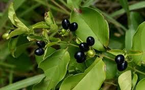
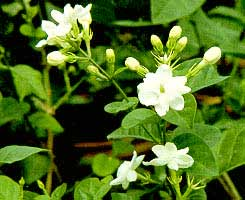
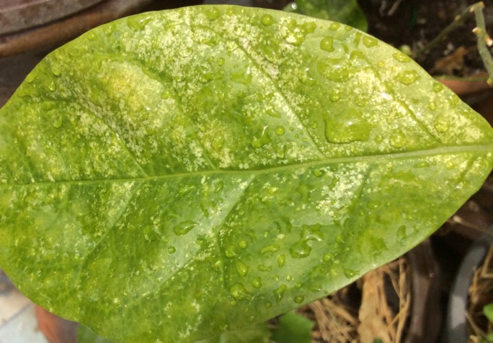

มะลิ (Jasmine) เป็นไม้ดอกที่มีกลิ่นหอมละมุนและมีความสำคัญในวัฒนธรรมไทย รวมถึงการใช้ในเชิงสมุนไพรและการตกแต่ง โดยเฉพาะอย่างยิ่ง มะลิเป็นสัญลักษณ์ของความรักที่บริสุทธิ์และใช้เป็นดอกไม้ประจำวันแม่ในประเทศไทย
1.ดอก
• สีขาวบริสุทธิ์ รูปทรงกลีบดอกแตกต่างตามสายพันธุ์
• กลิ่นหอมเด่นชัด โดยเฉพาะในช่วงเย็นและกลางคืน

2.ลำต้น
• ไม้พุ่มขนาดเล็กถึงกลาง บางชนิดเลื้อย
• ลำต้นและกิ่งมีสีเขียวหรือน้ำตาล

3.ใบ
• ใบเดี่ยว สีเขียวเข้ม เป็นมันเงา
• รูปทรงรีหรือไข่

4.ผล
• ผลเล็ก รูปทรงกลม สีดำหรือม่วงเมื่อสุก
1.การสืบพันธุ์แบบอาศัยเพศ
• การผสมเกสรโดยลม หรือแมลง เช่น ผึ้ง
• เมล็ดที่ได้สามารถนำไปเพาะปลูกได้
2.การสืบพันธุ์แบบไม่อาศัยเพศ
• การปักชำกิ่ง: นิยมใช้มากที่สุด
• การตอนกิ่ง: ช่วยให้ต้นใหม่มีคุณภาพดีและแข็งแรง
1.ทางวัฒนธรรม
• ใช้ในพิธีกรรมทางศาสนา เช่น พวงมาลัยบูชาพระ
• เป็นสัญลักษณ์ของความบริสุทธิ์และความกตัญญู
2. ด้านสมุนไพร
• ดอก: ช่วยลดความเครียด ทำเป็นน้ำมันหอมระเหย และบำรุงหัวใจ
• ใบ: ใช้รักษาแผลสด และแก้ไข้
• ราก: ใช้แก้ไอ แก้อาการปวดเมื่อย
3. ด้านความงาม
• น้ำมันหอมระเหยจากมะลินิยมใช้ในอุตสาหกรรมน้ำหอมและเครื่องสำอาง
4.การปลูกเพื่อความสวยงาม
• นิยมปลูกเป็นไม้ประดับในสวนหรือปลูกในกระถาง